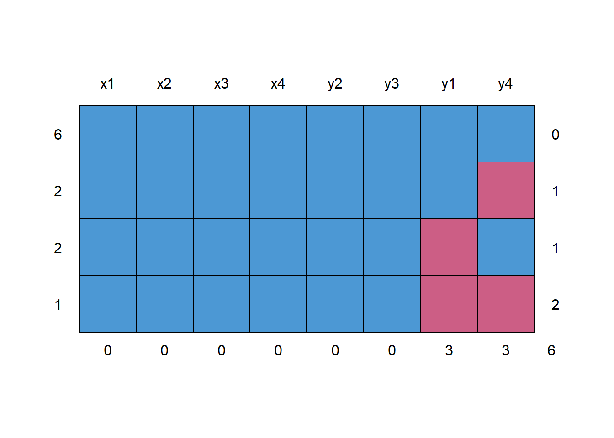
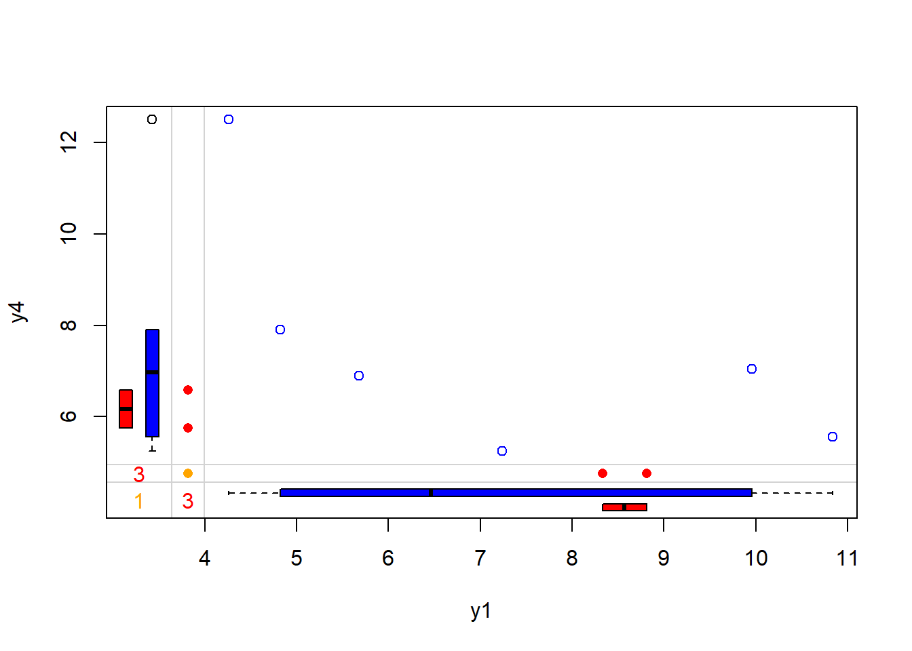
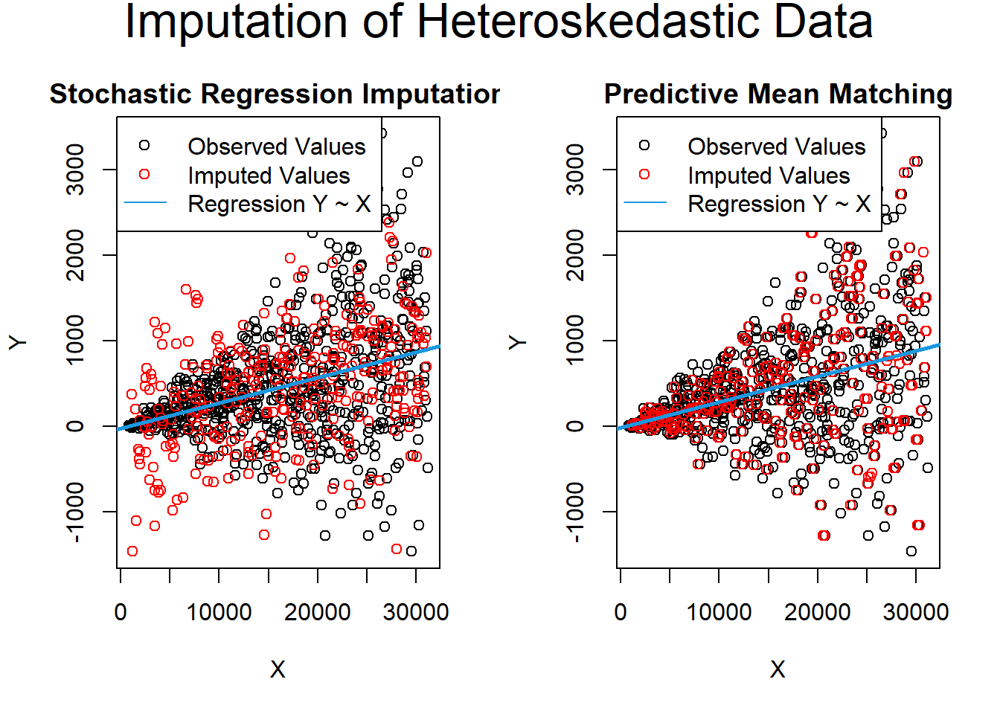

13.4 Methods for Handling Missing Data
13.4.1 Basic Methods
13.4.1.1 Complete Case Analysis (Listwise Deletion)
Listwise deletion retains only cases with complete data for all features, discarding rows with any missing values.
Advantages:
- Universally applicable to various statistical tests (e.g., SEM, multilevel regression).
- When data are Missing Completely at Random (MCAR), parameter estimates and standard errors are unbiased.
- Under specific Missing at Random (MAR) conditions, such as when the probability of missing data depends only on independent variables, listwise deletion can still yield unbiased estimates. For instance, in the model \(y = \beta_{0} + \beta_1X_1 + \beta_2X_2 + \epsilon\), if missingness in \(X_1\) is independent of \(y\) but depends on \(X_1\) and \(X_2\), the estimates remain unbiased (Little 1992).
- This aligns with principles of stratified sampling, which does not bias estimates.
- In logistic regression, if missing data depend only on the dependent variable but not on independent variables, listwise deletion produces consistent slope estimates, though the intercept may be biased (Vach and Vach 1994).
- For regression analysis, listwise deletion is more robust than Maximum Likelihood (ML) or Multiple Imputation (MI) when the MAR assumption is violated.
Disadvantages:
- Results in larger standard errors compared to advanced methods.
- If data are MAR but not MCAR, biased estimates can occur.
- In non-regression contexts, more sophisticated methods often outperform listwise deletion.
13.4.1.2 Available Case Analysis (Pairwise Deletion)
Pairwise deletion calculates estimates using all available data for each pair of variables, without requiring complete cases. It is particularly suitable for methods like linear regression, factor analysis, and SEM, which rely on correlation or covariance matrices.
Advantages:
- Under MCAR, pairwise deletion produces consistent and unbiased estimates in large samples.
- Compared to listwise deletion (Glasser 1964):
- When variable correlations are low, pairwise deletion provides more efficient estimates.
- When correlations are high, listwise deletion becomes more efficient.
Disadvantages:
- Yields biased estimates under MAR conditions.
- In small samples, covariance matrices might not be positive definite, rendering coefficient estimation infeasible.
- Software implementation varies in how sample size is handled, potentially affecting standard errors.
Note: Carefully review software documentation to understand how sample size is treated, as this influences standard error calculations.
13.4.1.3 Indicator Method (Dummy Variable Adjustment)
Also known as the Missing Indicator Method, this approach introduces an additional variable to indicate missingness in the dataset.
Implementation:
- Create an indicator variable:
\[ D = \begin{cases} 1 & \text{if data on } X \text{ are missing} \\ 0 & \text{otherwise} \end{cases} \]
- Modify the original variable to accommodate missingness:
\[ X^* = \begin{cases} X & \text{if data are available} \\ c & \text{if data are missing} \end{cases} \]
Note: A common choice for \(c\) is the mean of \(X\).
Interpretation:
- The coefficient of \(D\) represents the difference in the expected value of \(Y\) between cases with missing data and those without.
- The coefficient of \(X^*\) reflects the effect of \(X\) on \(Y\) for cases with observed data.
Disadvantages:
- Produces biased estimates of coefficients, even under MCAR conditions (Jones 1996).
- May lead to overinterpretation of the “missingness effect,” complicating model interpretation.
13.4.1.4 Advantages and Limitations of Basic Methods
| Method | Advantages | Disadvantages |
|---|---|---|
| Listwise Deletion | Simple and universally applicable; unbiased under MCAR; robust in certain MAR scenarios. | Inefficient (larger standard errors); biased under MAR in many cases; discards potentially useful data. |
| Pairwise Deletion | Utilizes all available data; efficient under MCAR with low correlations; avoids discarding all cases. | Biased under MAR; prone to non-positive-definite covariance matrices in small samples. |
| Indicator Method | Simple implementation; explicitly models missingness effect. | Biased even under MCAR; complicates interpretation; may not reflect true underlying relationships. |
13.4.2 Single Imputation Techniques
Single imputation methods replace missing data with a single value, generating a complete dataset that can be analyzed using standard techniques. While convenient, single imputation generally underestimates variability and risks biasing results.
13.4.2.1 Deterministic Methods
13.4.2.1.1 Mean, Median, Mode Imputation
This method replaces missing values with the mean, median, or mode of the observed data.
Advantages:
- Simplicity and ease of implementation.
- Useful for quick exploratory data analysis.
Disadvantages:
- Bias in Variances and Relationships: Mean imputation reduces variance and disrupts relationships among variables, leading to biased estimates of variances and covariances (Haitovsky 1968).
- Underestimated Standard Errors: Results in overly optimistic conclusions and increased risk of Type I errors.
- Dependency Structure Ignored: Particularly problematic in high-dimensional data, as it fails to capture dependencies among features.
13.4.2.1.2 Forward and Backward Filling (Time Series Contexts)
Used in time series analysis, this method replaces missing values using the preceding (forward filling) or succeeding (backward filling) values.
Advantages:
- Simple and preserves temporal ordering.
- Suitable for datasets where adjacent values are strongly correlated.
Disadvantages:
- Biased if missingness spans long gaps or occurs systematically.
- Cannot capture trends or changes in the underlying process.
13.4.2.2 Statistical Prediction Models
13.4.2.2.1 Linear Regression Imputation
Missing values in a variable are imputed based on a linear regression model using observed values of other variables.
Advantages:
- Preserves relationships between variables.
- More sophisticated than mean or median imputation.
Disadvantages:
- Assumes linear relationships, which may not hold in all datasets.
- Fails to capture variability, leading to downwardly biased standard errors.
13.4.2.2.2 Logistic Regression for Categorical Variables
Similar to linear regression imputation but used for categorical variables. The missing category is predicted using a logistic regression model.
Advantages:
- Useful for binary or multinomial categorical data.
- Preserves relationships with other variables.
Disadvantages:
- Assumes the underlying logistic model is appropriate.
- Does not account for uncertainty in the imputed values.
13.4.2.3 Non-Parametric Methods
13.4.2.3.1 Hot Deck Imputation
Hot Deck Imputation is a method of handling missing data where missing values are replaced with observed values from “donor” cases that are similar in other characteristics. This technique has been widely used in survey data, including by organizations like the U.S. Census Bureau, due to its flexibility and ability to maintain observed data distributions.
Advantages of Hot Deck Imputation
- Retains observed data distributions: Since missing values are imputed using actual observed data, the overall distribution remains realistic.
- Flexible: This method is applicable to both categorical and continuous variables.
- Constrained imputations: Imputed values are always feasible, as they come from observed cases.
- Adds variability: By randomly selecting donors, this method introduces variability, which can aid in robust standard error estimation.
Disadvantages of Hot Deck Imputation
- Sensitivity to similarity definitions: The quality of imputed values depends on the criteria used to define similarity between cases.
- Computational intensity: Identifying similar cases and randomly selecting donors can be computationally expensive, especially for large datasets.
- Subjectivity: Deciding how to define “similar” can introduce subjectivity or bias.
Algorithm for Hot Deck Imputation
Let \(n_1\) represent the number of cases with complete data on the variable \(Y\), and \(n_0\) represent the number of cases with missing data on \(Y\). The steps are as follows:
- From the \(n_1\) cases with complete data, take a random sample (with replacement) of \(n_1\) cases.
- From this sampled pool, take another random sample (with replacement) of size \(n_0\).
- Assign the values from the sampled \(n_0\) cases to the cases with missing data in \(Y\).
- Repeat this process for every variable in the dataset.
- For multiple imputation, repeat the above four steps multiple times to create multiple imputed datasets.
Variations and Considerations
- Skipping Step 1: If Step 1 is skipped, the variability of imputed values is reduced. This approach might not fully account for the uncertainty in missing data, which can underestimate standard errors.
- Defining similarity: A major challenge in this method is deciding what constitutes “similarity” between cases. Common approaches include matching based on distance metrics (e.g., Euclidean distance) or grouping cases by strata or clusters.
Practical Example
The U.S. Census Bureau employs an approximate Bayesian bootstrap variation of Hot Deck Imputation. In this approach:
Similar cases are identified based on shared characteristics or grouping variables.
A randomly chosen value from a similar individual in the sample is used to replace the missing value.
This method ensures imputed values are plausible while incorporating variability.
Key Notes
- Good aspects:
- Imputed values are constrained to observed possibilities.
- Random selection introduces variability, helpful for multiple imputation scenarios.
- Challenges:
- Defining and operationalizing “similarity” remains a critical step in applying this method effectively.
Below is an example code snippet illustrating Hot Deck Imputation in R:
library(Hmisc)
# Example dataset with missing values
data <- data.frame(
ID = 1:10,
Age = c(25, 30, NA, 40, NA, 50, 60, NA, 70, 80),
Gender = c("M", "F", "F", "M", "M", "F", "M", "F", "M", "F")
)
# Perform Hot Deck Imputation using Hmisc::impute
data$Age_imputed <- impute(data$Age, "random")
# Display the imputed dataset
print(data)
#> ID Age Gender Age_imputed
#> 1 1 25 M 25
#> 2 2 30 F 30
#> 3 3 NA F 40
#> 4 4 40 M 40
#> 5 5 NA M 40
#> 6 6 50 F 50
#> 7 7 60 M 60
#> 8 8 NA F 80
#> 9 9 70 M 70
#> 10 10 80 F 80This code randomly imputes missing values in the Age column based on observed data using the Hmisc package’s impute function.
13.4.2.3.2 Cold Deck Imputation
Cold Deck Imputation is a systematic variant of Hot Deck Imputation where the donor pool is predefined. Instead of selecting donors dynamically from within the same dataset, Cold Deck Imputation relies on an external reference dataset, such as historical data or other high-quality external sources.
Advantages of Cold Deck Imputation
- Utilizes high-quality external data: This method is particularly useful when reliable external reference datasets are available, allowing for accurate and consistent imputations.
- Consistency: If the same donor pool is used across multiple datasets, imputations remain consistent, which can be advantageous in longitudinal studies or standardized processes.
Disadvantages of Cold Deck Imputation
- Lack of adaptability: External data may not adequately reflect the unique characteristics or variability of the current dataset.
- Potential for systematic bias: If the donor pool is significantly different from the target dataset, imputations may introduce bias.
- Reduces variability: Unlike Hot Deck Imputation, Cold Deck Imputation systematically selects values, which removes random variation. This can affect the estimation of standard errors and other inferential statistics.
Key Characteristics
- Systematic Selection: Cold Deck Imputation selects donor values systematically based on predefined rules or matching criteria, rather than using random sampling.
- External Donor Pool: Donors are typically drawn from a separate dataset or historical records.
Algorithm for Cold Deck Imputation
- Identify an external reference dataset or predefined donor pool.
- Define the matching criteria to find “similar” cases between the donor pool and the current dataset (e.g., based on covariates or stratification).
- Systematically assign values from the donor pool to missing values in the current dataset based on the matching criteria.
- Repeat the process for each variable with missing data.
Practical Considerations
- Cold Deck Imputation works well when external data closely resemble the target dataset. However, when there are significant differences in distributions or relationships between variables, imputations may be biased or unrealistic.
- This method is less useful for datasets without access to reliable external reference data.
Suppose we have a current dataset with missing values and a historical dataset with similar variables. The following example demonstrates how Cold Deck Imputation can be implemented:
# Current dataset with missing values
current_data <- data.frame(
ID = 1:5,
Age = c(25, 30, NA, 45, NA),
Gender = c("M", "F", "F", "M", "M")
)
# External reference dataset (donor pool)
reference_data <- data.frame(
Age = c(28, 35, 42, 50),
Gender = c("M", "F", "F", "M")
)
# Perform Cold Deck Imputation
library(dplyr)
# Define a matching function to find closest donor
impute_cold_deck <- function(missing_row, reference_data) {
# Filter donors with the same gender
possible_donors <- reference_data %>%
filter(Gender == missing_row$Gender)
# Return the mean age of matching donors as an example of systematic imputation
return(mean(possible_donors$Age, na.rm = TRUE))
}
# Apply Cold Deck Imputation to the missing rows
current_data <- current_data %>%
rowwise() %>%
mutate(
Age_imputed = ifelse(
is.na(Age),
impute_cold_deck(cur_data(), reference_data),
Age
)
)
# Display the imputed dataset
print(current_data)
#> # A tibble: 5 × 4
#> # Rowwise:
#> ID Age Gender Age_imputed
#> <int> <dbl> <chr> <dbl>
#> 1 1 25 M 25
#> 2 2 30 F 30
#> 3 3 NA F 38.8
#> 4 4 45 M 45
#> 5 5 NA M 38.8Comparison to Hot Deck Imputation
| Feature | Hot Deck Imputation | Cold Deck Imputation |
|---|---|---|
| Donor Pool | Internal (within the dataset) | External (predefined dataset) |
| Selection | Random | Systematic |
| Variability | Retained | Reduced |
| Bias Potential | Lower | Higher (if donor pool differs) |
This method suits situations where external reference datasets are trusted and representative. However, careful consideration is required to ensure alignment between the donor pool and the target dataset to avoid systematic biases.
13.4.2.3.3 Random Draw from Observed Distribution
This imputation method replaces missing values by randomly sampling from the observed distribution of the variable with missing data. It is a simple, non-parametric approach that retains the variability of the original data.
Advantages
- Preserves variability:
- By randomly drawing values from the observed data, this method ensures that the imputed values reflect the inherent variability of the variable.
- Computational simplicity:
- The process is straightforward and does not require model fitting or complex calculations.
Disadvantages
- Ignores relationships among variables:
- Since the imputation is based solely on the observed distribution of the variable, it does not consider relationships or dependencies with other variables.
- May not align with trends:
- Imputed values are random and may fail to align with patterns or trends present in the data, such as time series structures or interactions.
Steps in Random Draw Imputation
- Identify the observed (non-missing) values of the variable.
- For each missing value, randomly sample one value from the observed distribution with or without replacement.
- Replace the missing value with the randomly sampled value.
The following example demonstrates how to use random draw imputation to fill in missing values:
# Example dataset with missing values
set.seed(123)
data <- data.frame(
ID = 1:10,
Value = c(10, 20, NA, 30, 40, NA, 50, 60, NA, 70)
)
# Perform random draw imputation
random_draw_impute <- function(data, variable) {
observed_values <- data[[variable]][!is.na(data[[variable]])] # Observed values
data[[variable]][is.na(data[[variable]])] <- sample(observed_values,
sum(is.na(data[[variable]])),
replace = TRUE)
return(data)
}
# Apply the imputation
imputed_data <- random_draw_impute(data, variable = "Value")
# Display the imputed dataset
print(imputed_data)
#> ID Value
#> 1 1 10
#> 2 2 20
#> 3 3 70
#> 4 4 30
#> 5 5 40
#> 6 6 70
#> 7 7 50
#> 8 8 60
#> 9 9 30
#> 10 10 70Considerations
When to Use:
- This method is suitable for exploratory analysis or as a quick way to handle missing data in univariate contexts.
Limitations:
- Random draws may result in values that do not fit well in the broader context of the dataset, especially in cases where the variable has strong relationships with others.
| Feature | Random Draw from Observed Distribution | Regression-Based Imputation |
|---|---|---|
| Complexity | Simple | Moderate to High |
| Preserves Variability | Yes | Limited in deterministic forms |
| Considers Relationships | No | Yes |
| Risk of Implausible Values | Low (if observed values are plausible) | Moderate to High |
This method is a quick and computationally efficient way to address missing data but is best complemented by more sophisticated methods when relationships between variables are important.
13.4.2.4 Semi-Parametric Methods
13.4.2.4.1 Predictive Mean Matching (PMM)
Predictive Mean Matching (PMM) imputes missing values by finding observed values closest in predicted value (based on a regression model) to the missing data. The donor values are then used to fill in the gaps.
Advantages:
Maintains observed variability in the data.
Ensures imputed values are realistic since they are drawn from observed data.
Disadvantages:
Requires a suitable predictive model.
Computationally intensive for large datasets.
Steps for PMM:
- Regress \(Y\) on \(X\) (matrix of covariates) for the \(n_1\) (non-missing cases) to estimate coefficients \(\hat{b}\) and residual variance \(s^2\).
- Draw from the posterior predictive distribution of residual variance: \[s^2_{[1]} = \frac{(n_1-k)s^2}{\chi^2},\] where \(\chi^2\) is a random draw from \(\chi^2_{n_1-k}\).
- Randomly sample from the posterior distribution of \(\hat{b}\): \[b_{[1]} \sim MVN(\hat{b}, s^2_{[1]}(X'X)^{-1}).\]
- Standardize residuals for \(n_1\) cases: \[e_i = \frac{y_i - \hat{b}x_i}{\sqrt{s^2(1-k/n_1)}}.\]
- Randomly draw a sample (with replacement) of \(n_0\) residuals from Step 4.
- Calculate imputed values for \(n_0\) missing cases: \[y_i = b_{[1]}x_i + s_{[1]}e_i.\]
- Repeat Steps 2–6 (except Step 4) to create multiple imputations.
Notes:
PMM can handle heteroskedasticity
works for multiple variables, imputing each using all others as predictors.
Example:
Example from Statistics Globe
set.seed(1) # Seed
N <- 100 # Sample size
y <- round(runif(N,-10, 10)) # Target variable Y
x1 <- y + round(runif(N, 0, 50)) # Auxiliary variable 1
x2 <- round(y + 0.25 * x1 + rnorm(N,-3, 15)) # Auxiliary variable 2
x3 <- round(0.1 * x1 + rpois(N, 2)) # Auxiliary variable 3
# (categorical variable)
x4 <- as.factor(round(0.02 * y + runif(N))) # Auxiliary variable 4
# Insert 20% missing data in Y
y[rbinom(N, 1, 0.2) == 1] <- NA
data <- data.frame(y, x1, x2, x3, x4) # Store data in dataset
head(data) # First 6 rows of our data
#> y x1 x2 x3 x4
#> 1 NA 28 -10 5 0
#> 2 NA 15 -2 2 1
#> 3 1 15 -12 6 1
#> 4 8 58 22 10 1
#> 5 NA 26 -12 7 0
#> 6 NA 19 36 5 1
library("mice") # Load mice package
##### Impute data via predictive mean matching (single imputation)#####
imp_single <- mice::mice(data, m = 1, method = "pmm") # Impute missing values
#>
#> iter imp variable
#> 1 1 y
#> 2 1 y
#> 3 1 y
#> 4 1 y
#> 5 1 y
data_imp_single <- mice::complete(imp_single) # Store imputed data
# head(data_imp_single)
# Since single imputation underestiamtes stnadard errors,
# we use multiple imputaiton
##### Predictive mean matching (multiple imputation) #####
# Impute missing values multiple times
imp_multi <- mice(data, m = 5, method = "pmm")
#>
#> iter imp variable
#> 1 1 y
#> 1 2 y
#> 1 3 y
#> 1 4 y
#> 1 5 y
#> 2 1 y
#> 2 2 y
#> 2 3 y
#> 2 4 y
#> 2 5 y
#> 3 1 y
#> 3 2 y
#> 3 3 y
#> 3 4 y
#> 3 5 y
#> 4 1 y
#> 4 2 y
#> 4 3 y
#> 4 4 y
#> 4 5 y
#> 5 1 y
#> 5 2 y
#> 5 3 y
#> 5 4 y
#> 5 5 y
data_imp_multi_all <-
# Store multiply imputed data
mice::complete(imp_multi,
"repeated",
include = TRUE)
data_imp_multi <-
# Combine imputed Y and X1-X4 (for convenience)
data.frame(data_imp_multi_all[, 1:6], data[, 2:5])
head(data_imp_multi)
#> y.0 y.1 y.2 y.3 y.4 y.5 x1 x2 x3 x4
#> 1 NA -1 6 -1 -3 3 28 -10 5 0
#> 2 NA -10 10 4 0 2 15 -2 2 1
#> 3 1 1 1 1 1 1 15 -12 6 1
#> 4 8 8 8 8 8 8 58 22 10 1
#> 5 NA 0 -1 -6 2 0 26 -12 7 0
#> 6 NA 4 0 3 3 3 19 36 5 1Example from UCLA Statistical Consulting
library(mice)
library(VIM)
library(lattice)
library(ggplot2)
## set observations to NA
anscombe <- within(anscombe, {
y1[1:3] <- NA
y4[3:5] <- NA
})
## view
head(anscombe)
#> x1 x2 x3 x4 y1 y2 y3 y4
#> 1 10 10 10 8 NA 9.14 7.46 6.58
#> 2 8 8 8 8 NA 8.14 6.77 5.76
#> 3 13 13 13 8 NA 8.74 12.74 NA
#> 4 9 9 9 8 8.81 8.77 7.11 NA
#> 5 11 11 11 8 8.33 9.26 7.81 NA
#> 6 14 14 14 8 9.96 8.10 8.84 7.04
Figure 13.4: Missing Data Pattern
#> x1 x2 x3 x4 y2 y3 y1 y4
#> 6 1 1 1 1 1 1 1 1 0
#> 2 1 1 1 1 1 1 1 0 1
#> 2 1 1 1 1 1 1 0 1 1
#> 1 1 1 1 1 1 1 0 0 2
#> 0 0 0 0 0 0 3 3 6## Number of observations per patterns for all pairs of variables
p <- md.pairs(anscombe)
p
#> $rr
#> x1 x2 x3 x4 y1 y2 y3 y4
#> x1 11 11 11 11 8 11 11 8
#> x2 11 11 11 11 8 11 11 8
#> x3 11 11 11 11 8 11 11 8
#> x4 11 11 11 11 8 11 11 8
#> y1 8 8 8 8 8 8 8 6
#> y2 11 11 11 11 8 11 11 8
#> y3 11 11 11 11 8 11 11 8
#> y4 8 8 8 8 6 8 8 8
#>
#> $rm
#> x1 x2 x3 x4 y1 y2 y3 y4
#> x1 0 0 0 0 3 0 0 3
#> x2 0 0 0 0 3 0 0 3
#> x3 0 0 0 0 3 0 0 3
#> x4 0 0 0 0 3 0 0 3
#> y1 0 0 0 0 0 0 0 2
#> y2 0 0 0 0 3 0 0 3
#> y3 0 0 0 0 3 0 0 3
#> y4 0 0 0 0 2 0 0 0
#>
#> $mr
#> x1 x2 x3 x4 y1 y2 y3 y4
#> x1 0 0 0 0 0 0 0 0
#> x2 0 0 0 0 0 0 0 0
#> x3 0 0 0 0 0 0 0 0
#> x4 0 0 0 0 0 0 0 0
#> y1 3 3 3 3 0 3 3 2
#> y2 0 0 0 0 0 0 0 0
#> y3 0 0 0 0 0 0 0 0
#> y4 3 3 3 3 2 3 3 0
#>
#> $mm
#> x1 x2 x3 x4 y1 y2 y3 y4
#> x1 0 0 0 0 0 0 0 0
#> x2 0 0 0 0 0 0 0 0
#> x3 0 0 0 0 0 0 0 0
#> x4 0 0 0 0 0 0 0 0
#> y1 0 0 0 0 3 0 0 1
#> y2 0 0 0 0 0 0 0 0
#> y3 0 0 0 0 0 0 0 0
#> y4 0 0 0 0 1 0 0 3rr= number of observations where both pairs of values are observedrm= the number of observations where both variables are missing valuesmr= the number of observations where the first variable’s value (e.g. the row variable) is observed and second (or column) variable is missingmm= the number of observations where the second variable’s value (e.g. the col variable) is observed and first (or row) variable is missing

Figure 13.5: Scatterplot of y4 versus y1 with Marginal Boxplots
## 5 imputations for all missing values
imp1 <- mice(anscombe, m = 5)
#>
#> iter imp variable
#> 1 1 y1 y4
#> 1 2 y1 y4
#> 1 3 y1 y4
#> 1 4 y1 y4
#> 1 5 y1 y4
#> 2 1 y1 y4
#> 2 2 y1 y4
#> 2 3 y1 y4
#> 2 4 y1 y4
#> 2 5 y1 y4
#> 3 1 y1 y4
#> 3 2 y1 y4
#> 3 3 y1 y4
#> 3 4 y1 y4
#> 3 5 y1 y4
#> 4 1 y1 y4
#> 4 2 y1 y4
#> 4 3 y1 y4
#> 4 4 y1 y4
#> 4 5 y1 y4
#> 5 1 y1 y4
#> 5 2 y1 y4
#> 5 3 y1 y4
#> 5 4 y1 y4
#> 5 5 y1 y4
## linear regression for each imputed data set - 5 regression are run
fitm <- with(imp1, lm(y1 ~ y4 + x1))
summary(fitm)
#> # A tibble: 15 × 7
#> term estimate std.error statistic p.value nobs df.residual
#> <chr> <dbl> <dbl> <dbl> <dbl> <int> <dbl>
#> 1 (Intercept) 7.33 2.44 3.01 0.0169 11 8
#> 2 y4 -0.416 0.223 -1.86 0.0996 11 8
#> 3 x1 0.371 0.141 2.63 0.0302 11 8
#> 4 (Intercept) 7.27 2.90 2.51 0.0365 11 8
#> 5 y4 -0.435 0.273 -1.59 0.150 11 8
#> 6 x1 0.387 0.160 2.41 0.0422 11 8
#> 7 (Intercept) 6.54 2.80 2.33 0.0479 11 8
#> 8 y4 -0.322 0.255 -1.26 0.243 11 8
#> 9 x1 0.362 0.156 2.32 0.0491 11 8
#> 10 (Intercept) 5.93 3.08 1.92 0.0907 11 8
#> 11 y4 -0.286 0.282 -1.02 0.339 11 8
#> 12 x1 0.418 0.176 2.37 0.0451 11 8
#> 13 (Intercept) 8.16 2.67 3.05 0.0158 11 8
#> 14 y4 -0.489 0.251 -1.95 0.0867 11 8
#> 15 x1 0.326 0.151 2.17 0.0622 11 8
## pool coefficients and standard errors across all 5 regression models
mice::pool(fitm)
#> Class: mipo m = 5
#> term m estimate ubar b t dfcom df
#> 1 (Intercept) 5 7.0445966 7.76794670 0.719350800 8.63116766 8 5.805314
#> 2 y4 5 -0.3896685 0.06634920 0.006991497 0.07473900 8 5.706243
#> 3 x1 5 0.3727865 0.02473847 0.001134293 0.02609962 8 6.178032
#> riv lambda fmi
#> 1 0.11112601 0.10001207 0.3044313
#> 2 0.12644909 0.11225460 0.3161877
#> 3 0.05502168 0.05215218 0.2586992
## output parameter estimates
summary(mice::pool(fitm))
#> term estimate std.error statistic df p.value
#> 1 (Intercept) 7.0445966 2.9378849 2.397846 5.805314 0.05483678
#> 2 y4 -0.3896685 0.2733843 -1.425350 5.706243 0.20638512
#> 3 x1 0.3727865 0.1615538 2.307508 6.178032 0.0592399913.4.2.4.2 Stochastic Imputation
Stochastic Imputation is an enhancement of regression imputation that introduces randomness into the imputation process by adding a random residual to the predicted values from a regression model. This approach aims to retain the variability of the original data while reducing the bias introduced by deterministic regression imputation.
Stochastic Imputation can be described as:
\[ \text{Imputed Value} = \text{Predicted Value (from regression)} + \text{Random Residual} \]
This method is commonly used as a foundation for multiple imputation techniques.
Advantages of Stochastic Imputation
- Retains all the benefits of regression imputation:
- Preserves relationships between variables in the dataset.
- Utilizes information from observed data to inform imputations.
- Introduces randomness:
- Adds variability by including a random residual term, making imputed values more realistic and better representing the uncertainty of missing data.
- Supports multiple imputation:
- By generating different random residuals for each iteration, it facilitates the creation of multiple plausible datasets for robust statistical analysis.
Disadvantages of Stochastic Imputation
- Implausible values:
- Depending on the random residuals, imputed values may fall outside the plausible range (e.g., negative values for variables like age or income).
- Cannot handle heteroskedasticity:
- If the data exhibit heteroskedasticity (i.e., non-constant variance of residuals), the randomness added by stochastic imputation may not accurately reflect the underlying variability.
Steps in Stochastic Imputation
- Fit a regression model using cases with complete data for the variable with missing values.
- Predict missing values using the fitted model.
- Generate random residuals based on the distribution of residuals from the regression model.
- Add the random residuals to the predicted values to impute missing values.
# Example dataset with missing values
set.seed(123)
data <- data.frame(
X = rnorm(10, mean = 50, sd = 10),
Y = c(100, 105, 110, NA, 120, NA, 130, 135, 140, NA)
)
# Perform stochastic imputation
stochastic_impute <- function(data, predictor, target) {
# Subset data with complete cases
complete_data <- data[!is.na(data[[target]]), ]
# Fit a regression model
model <- lm(as.formula(paste(target, "~", predictor)), data = complete_data)
# Predict missing values
missing_data <- data[is.na(data[[target]]), ]
predictions <- predict(model, newdata = missing_data)
# Add random residuals
residual_sd <- sd(model$residuals, na.rm = TRUE)
stochastic_values <- predictions + rnorm(length(predictions), mean = 0, sd = residual_sd)
# Impute missing values
data[is.na(data[[target]]), target] <- stochastic_values
return(data)
}
# Apply stochastic imputation
imputed_data <- stochastic_impute(data, predictor = "X", target = "Y")
# Display the imputed dataset
print(imputed_data)
#> X Y
#> 1 44.39524 100.0000
#> 2 47.69823 105.0000
#> 3 65.58708 110.0000
#> 4 50.70508 137.0070
#> 5 51.29288 120.0000
#> 6 67.15065 114.9107
#> 7 54.60916 130.0000
#> 8 37.34939 135.0000
#> 9 43.13147 140.0000
#> 10 45.54338 127.9359Notes
Multiple Imputation: Most multiple imputation methods are extensions of stochastic regression imputation. By repeating the imputation process with different random seeds, multiple datasets can be generated to account for uncertainty in the imputed values.
Dealing with Implausible Values: Additional constraints or transformations (e.g., truncating imputed values to a plausible range) may be necessary to address the issue of implausible values.
Comparison to Deterministic Regression Imputation
| Feature | Deterministic Regression Imputation | Stochastic Imputation |
|---|---|---|
| Randomness | None | Adds random residuals |
| Preserves Variability | No | Yes |
| Use in Multiple Imputation | Limited | Well-suited |
| Bias Potential | Higher | Lower |
# Income data
set.seed(1) # Set seed
N <- 1000 # Sample size
income <-
round(rnorm(N, 0, 500)) # Create some synthetic income data
income[income < 0] <- income[income < 0] * (-1)
x1 <- income + rnorm(N, 1000, 1500) # Auxiliary variables
x2 <- income + rnorm(N,-5000, 2000)
# Create 10% missingness in income
income[rbinom(N, 1, 0.1) == 1] <- NA
data_inc_miss <- data.frame(income, x1, x2)Single stochastic regression imputation
imp_inc_sri <- mice(data_inc_miss, method = "norm.nob", m = 1)
#>
#> iter imp variable
#> 1 1 income
#> 2 1 income
#> 3 1 income
#> 4 1 income
#> 5 1 income
data_inc_sri <- mice::complete(imp_inc_sri)Single predictive mean matching
imp_inc_pmm <- mice(data_inc_miss, method = "pmm", m = 1)
#>
#> iter imp variable
#> 1 1 income
#> 2 1 income
#> 3 1 income
#> 4 1 income
#> 5 1 income
data_inc_pmm <- mice::complete(imp_inc_pmm)Stochastic regression imputation contains negative values
data_inc_sri$income[data_inc_sri$income < 0]
#> [1] -23.85404 -58.37790 -61.86396 -57.47909 -21.29221 -73.26549
#> [7] -61.76194 -42.45942 -351.02991 -317.69090
# No values below 0
data_inc_pmm$income[data_inc_pmm$income < 0]
#> numeric(0)Evidence for heteroskadastic data
# Heteroscedastic data
set.seed(1) # Set seed
N <- 1:1000 # Sample size
a <- 0
b <- 1
sigma2 <- N^2
eps <- rnorm(N, mean = 0, sd = sqrt(sigma2))
y <- a + b * N + eps # Heteroscedastic variable
x <- 30 * N + rnorm(N[length(N)], 1000, 200) # Correlated variable
y[rbinom(N[length(N)], 1, 0.3) == 1] <- NA # 30% missing
data_het_miss <- data.frame(y, x)Single stochastic regression imputation
imp_het_sri <- mice(data_het_miss, method = "norm.nob", m = 1)
#>
#> iter imp variable
#> 1 1 y
#> 2 1 y
#> 3 1 y
#> 4 1 y
#> 5 1 y
data_het_sri <- mice::complete(imp_het_sri)Single predictive mean matching
imp_het_pmm <- mice(data_het_miss, method = "pmm", m = 1)
#>
#> iter imp variable
#> 1 1 y
#> 2 1 y
#> 3 1 y
#> 4 1 y
#> 5 1 y
data_het_pmm <- mice::complete(imp_het_pmm)Comparison between predictive mean matching and stochastic regression imputation
# Both plots in one graphic
par(mfrow = c(1, 2))
# Plot of observed values
plot(x[!is.na(data_het_sri$y)],
data_het_sri$y[!is.na(data_het_sri$y)],
main = "",
xlab = "X",
ylab = "Y")
# Plot of missing values
points(x[is.na(y)], data_het_sri$y[is.na(y)],
col = "red")
# Title of plot
title("Stochastic Regression Imputation",
line = 0.5)
# Regression line
abline(lm(y ~ x, data_het_sri),
col = "#1b98e0", lwd = 2.5)
# Legend
legend(
"topleft",
c("Observed Values", "Imputed Values", "Regression Y ~ X"),
pch = c(1, 1, NA),
lty = c(NA, NA, 1),
col = c("black", "red", "#1b98e0")
)
# Plot of observed values
plot(x[!is.na(data_het_pmm$y)],
data_het_pmm$y[!is.na(data_het_pmm$y)],
main = "",
xlab = "X",
ylab = "Y")
# Plot of missing values
points(x[is.na(y)], data_het_pmm$y[is.na(y)],
col = "red")
# Title of plot
title("Predictive Mean Matching",
line = 0.5)
abline(lm(y ~ x, data_het_pmm),
col = "#1b98e0", lwd = 2.5)
# Legend
legend(
"topleft",
c("Observed Values", "Imputed Values", "Regression Y ~ X"),
pch = c(1, 1, NA),
lty = c(NA, NA, 1),
col = c("black", "red", "#1b98e0")
)
mtext(
"Imputation of Heteroskedastic Data",
# Main title of plot
side = 3,
line = -1.5,
outer = TRUE,
cex = 2
)
Figure 13.6: Imputation of Heteroskedastic Data
13.4.2.5 Matrix Completion
Matrix completion is a method used to impute missing data in a feature matrix while accounting for dependence between features. This approach leverages principal components to approximate the data matrix, a process referred to as matrix completion (James et al. 2013, Sec 12.3).
Problem Setup
Consider an \(n \times p\) feature matrix \(\mathbf{X}\), where the element \(x_{ij}\) represents the value for the \(i\)th observation and \(j\)th feature. Some elements of \(\mathbf{X}\) are missing, and we aim to impute these missing values.
The matrix \(\mathbf{X}\) can be approximated using its leading principal components. Specifically, we consider \(M\) principal components that minimize the following objective:
\[ \underset{\mathbf{A} \in \mathbb{R}^{n \times M}, \mathbf{B} \in \mathbb{R}^{p \times M}}{\operatorname{min}} \left\{ \sum_{(i,j) \in \mathcal{O}} (x_{ij} - \sum_{m=1}^M a_{im}b_{jm})^2 \right\} \]
where \(\mathcal{O}\) is the set of observed indices \((i,j)\), which is a subset of the total \(n \times p\) pairs. Here: - \(\mathbf{A}\) is an \(n \times M\) matrix of principal component scores. - \(\mathbf{B}\) is a \(p \times M\) matrix of principal component loadings.
Imputation of Missing Values
After solving the minimization problem:
- Missing observations \(x_{ij}\) can be imputed using the formula: \[ \hat{x}_{ij} = \sum_{m=1}^M \hat{a}_{im}\hat{b}_{jm} \] where \(\hat{a}_{im}\) and \(\hat{b}_{jm}\) are the estimated elements of \(\mathbf{A}\) and \(\mathbf{B}\), respectively.
- The leading \(M\) principal component scores and loadings can be approximately recovered, as is done in complete data scenarios.
Iterative Algorithm
The eigen-decomposition used in standard principal component analysis is not applicable here because of missing values. Instead, an iterative algorithm, as described in (James et al. 2013, Alg 12.1), is employed:
Initialize the Complete Matrix: Construct an initial complete matrix \(\tilde{\mathbf{X}}\) of dimension \(n \times p\) where: \[ \tilde{x}_{ij} = \begin{cases} x_{ij} & \text{if } (i,j) \in \mathcal{O} \\ \bar{x}_j & \text{if } (i,j) \notin \mathcal{O} \end{cases} \] Here, \(\bar{x}_j\) is the mean of the observed values for the \(j\)th variable in the incomplete data matrix \(\mathbf{X}\). \(\mathcal{O}\) indexes the observed elements of \(\mathbf{X}\).
Iterative Steps: Repeat the following steps until convergence:
Minimize the Objective: Solve the problem: \[ \underset{\mathbf{A} \in R^{n \times M}, \mathbf{B} \in R^{p \times M}}{\operatorname{min}} \left\{ \sum_{(i,j) \in \mathcal{O}} (x_{ij} - \sum_{m=1}^M a_{im}b_{jm})^2 \right\} \] by computing the principal components of the current \(\tilde{\mathbf{X}}\).
Update Missing Values: For each missing element \((i,j) \notin \mathcal{O}\), set: \[ \tilde{x}_{ij} \leftarrow \sum_{m=1}^M \hat{a}_{im}\hat{b}_{jm} \]
Recalculate the Objective: Compute the objective: \[ \sum_{(i,j) \in \mathcal{O}} (x_{ij} - \sum_{m=1}^M \hat{a}_{im} \hat{b}_{jm})^2 \]
Return Imputed Values: Once the algorithm converges, return the estimated missing entries \(\tilde{x}_{ij}\) for \((i,j) \notin \mathcal{O}\).
Key Considerations
- This approach assumes that the missing data are missing at random (MAR).
- Convergence criteria for the iterative algorithm often involve achieving a threshold for the change in the objective function or limiting the number of iterations.
- The choice of \(M\), the number of principal components, can be guided by cross-validation or other model selection techniques.
13.4.2.6 Comparison of Single Imputation Techniques
| Method | Advantages | Disadvantages |
|---|---|---|
| Mean, Median, Mode Imputation | Simple, quick implementation. | Biased variances and covariances; ignores relationships among variables. |
| Forward/Backward Filling | Preserves temporal ordering. | Biased for systematic gaps or long missing sequences. |
| Linear Regression Imputation | Preserves relationships among variables. | Fails to capture variability; assumes linearity. |
| Logistic Regression Imputation | Handles categorical variables well. | Requires appropriate model assumptions; ignores variability. |
| PMM | Maintains variability; imputes realistic values. | Computationally intensive; requires a good predictive model. |
| Hot Deck Imputation | Flexible; maintains data distribution. | Sensitive to donor selection; computationally demanding. |
| Cold Deck Imputation | Consistent across datasets with predefined donor pools. | Risk of bias if donor data are not representative. |
| Random Draw from Observed | Simple; retains variability in data. | Does not preserve relationships among variables; random imputation may distort trends. |
| Matrix Completion | Captures dependencies; imputes structurally consistent values. | Computationally intensive; assumes principal components capture data relationships. |
Single imputation techniques are straightforward and accessible, but they often underestimate uncertainty and fail to fully leverage relationships among variables. These limitations make them less ideal for rigorous analyses compared to multiple imputation or model-based approaches.
13.4.3 Machine Learning and Modern Approaches
13.4.3.1 Tree-Based Methods
13.4.3.1.1 Random Forest Imputation (missForest)
Random Forest Imputation uses an iterative process where a random forest model predicts missing values for one variable at a time, treating other variables as predictors. This process continues until convergence.
- Mathematical Framework:
- For a variable \(X_j\) with missing values, treat \(X_j\) as the response variable.
- Fit a random forest model \(f(X_{-j})\) using the other variables \(X_{-j}\) as predictors.
- Predict missing values \(\hat{X}_j = f(X_{-j})\).
- Repeat for all variables with missing data until imputed values stabilize.
- Advantages:
- Captures complex interactions and non-linearities.
- Handles mixed data types seamlessly.
- Limitations:
- Computationally intensive for large datasets.
- Sensitive to the quality of data relationships.
13.4.3.1.2 Gradient Boosting Machines (GBM)
Gradient Boosting Machines iteratively build models to minimize loss functions. For imputation, missing values are treated as a target variable to be predicted.
Mathematical Framework: The GBM algorithm minimizes the loss function: \[ L = \sum_{i=1}^n \ell(y_i, f(x_i)), \] where \(\ell\) is the loss function (e.g., mean squared error), \(y_i\) are observed values, and \(f(x_i)\) are predictions.
Missing values are treated as the \(y_i\) and predicted iteratively.
Advantages:
- Highly accurate predictions.
- Captures variable importance.
Limitations:
- Overfitting risks.
- Requires careful parameter tuning.
13.4.3.2 Neural Network-Based Imputation
13.4.3.2.1 Autoencoders
Autoencoders are unsupervised neural networks that compress and reconstruct data. Missing values are estimated during reconstruction.
Mathematical Framework: An autoencoder consists of:
- An encoder function: \(h = g(Wx + b)\), which compresses the input \(x\).
- A decoder function: \(\hat{x} = g'(W'h + b')\), which reconstructs the data.
The network minimizes the reconstruction loss: \[ L = \sum_{i=1}^n (x_i - \hat{x}_i)^2. \]
Advantages:
- Handles high-dimensional and non-linear data.
- Unsupervised learning.
Limitations:
- Computationally demanding.
- Requires large datasets for effective training.
13.4.3.2.2 Generative Adversarial Networks (GANs) for Data Imputation
GANs consist of a generator and a discriminator. For imputation, the generator fills in missing values, and the discriminator evaluates the quality of the imputations.
- Mathematical Framework: GAN training involves optimizing: \[
\min_G \max_D \mathbb{E}[\log D(x)] + \mathbb{E}[\log(1 - D(G(z)))].
\]
- \(D(x)\): Discriminator’s probability that \(x\) is real.
- \(G(z)\): Generator’s output for latent input \(z\).
- Advantages:
- Realistic imputations that reflect underlying distributions.
- Handles complex data types.
- Limitations:
- Difficult to train and tune.
- Computationally intensive.
13.4.3.3 Matrix Factorization and Matrix Completion
13.4.3.3.1 Singular Value Decomposition (SVD)
SVD decomposes a matrix \(A\) into three matrices: \[ A = U\Sigma V^T, \] where \(U\) and \(V\) are orthogonal matrices, and \(\Sigma\) contains singular values. Missing values are estimated by reconstructing \(A\) using a low-rank approximation: \[ \hat{A} = U_k \Sigma_k V_k^T. \]
- Advantages:
- Captures global patterns.
- Efficient for structured data.
- Limitations:
- Assumes linear relationships.
- Sensitive to sparsity.
13.4.3.3.2 Collaborative Filtering Approaches
Collaborative filtering uses similarities between rows (users) or columns (items) to impute missing data. For instance, the value of \(X_{ij}\) is predicted as: \[ \hat{X}_{ij} = \frac{\sum_{k \in N(i)} w_{ik} X_{kj}}{\sum_{k \in N(i)} w_{ik}}, \] where \(w_{ik}\) represents similarity weights and \(N(i)\) is the set of neighbors.
13.4.3.4 K-Nearest Neighbor (KNN) Imputation
KNN identifies the \(k\) nearest observations based on a distance metric and imputes missing values using a weighted average (continuous variables) or mode (categorical variables).
Mathematical Framework: For a missing value \(x\), its imputed value is: \[ \hat{x} = \frac{\sum_{i=1}^k w_i x_i}{\sum_{i=1}^k w_i}, \] where \(w_i = \frac{1}{d(x, x_i)}\) and \(d(x, x_i)\) is a distance metric (e.g., Euclidean or Manhattan).
Advantages:
- Simple and interpretable.
- Non-parametric.
Limitations:
- Computationally expensive for large datasets.
13.4.3.5 Hybrid Methods
Hybrid methods combine statistical and machine learning approaches. For example, mean imputation followed by fine-tuning with machine learning models. These methods aim to leverage the strengths of multiple techniques.
13.4.3.6 Summary Table
| Method | Advantages | Limitations | Applications |
|---|---|---|---|
| Random Forest (missForest) | Handles mixed data types, captures interactions | Computationally intensive | Mixed data types |
| Gradient Boosting Machines | High accuracy, feature importance | Sensitive to parameters | Predictive tasks |
| Autoencoders | Handles high-dimensional, non-linear data | Computationally expensive | Complex datasets |
| GANs | Realistic imputations, complex distributions | Difficult to train, resource-intensive | Healthcare, finance |
| SVD | Captures global patterns, efficient | Assumes linear relationships | Recommendation systems |
| Collaborative Filtering | Intuitive for user-item data | Struggles with sparse or new data | Recommender systems |
| KNN Imputation | Simple, interpretable | Computationally intensive, sensitive to k | General-purpose |
| Hybrid Methods | Combines multiple strengths | Complexity in design | Flexible |
13.4.4 Multiple Imputation
Multiple Imputation (MI) is a statistical technique for handling missing data by creating several plausible datasets through imputation, analyzing each dataset separately, and then combining the results to account for uncertainty in the imputations. MI operates under the assumption that missing data is either Missing Completely at Random (MCAR) or Missing at Random (MAR).
Unlike Single Imputation Techniques, MI reflects the uncertainty inherent in the missing data by introducing variability in the imputed values. It avoids biases introduced by ad hoc methods and produces more reliable statistical inferences.
The three fundamental steps in MI are:
- Imputation: Replace missing values with a set of plausible values to create multiple “completed” datasets.
- Analysis: Perform the desired statistical analysis on each imputed dataset.
- Combination: Combine the results using rules to account for within- and between-imputation variability.
13.4.4.1 Why Multiple Imputation is Important
Imputed values are estimates and inherently include random error. However, when these estimates are treated as exact values in subsequent analysis, the software may overlook this additional error. This oversight results in underestimated standard errors and overly small p-values, leading to misleading conclusions.
Multiple imputation addresses this issue by generating multiple estimates for each missing value. These estimates differ slightly due to their random component, which reintroduces variation. This variation helps the software incorporate the uncertainty of imputed values, resulting in:
Unbiased parameter estimates
Accurate standard errors
Improved p-values
Multiple imputation was a significant breakthrough in statistics approximately 20 years ago. It provides solutions for many missing data issues (though not all) and, when applied correctly, leads to reliable parameter estimates.
If the proportion of missing data is very small (e.g., 2-3%), the choice of imputation method is less critical.
13.4.4.2 Goals of Multiple Imputation
The primary goals of any missing data technique, including multiple imputation, are:
Unbiased parameter estimates: Ensuring accurate regression coefficients, group means, odds ratios, etc.
Accurate standard errors: This leads to reliable p-values and appropriate statistical inferences.
Adequate power: To detect meaningful and significant parameter values.
13.4.4.3 Overview of Rubin’s Framework
Rubin’s Framework provides the theoretical foundation for MI. It uses a Bayesian model-based approach for generating imputations and a frequentist approach for evaluating the results. The central goals of Rubin’s framework are to ensure that imputations:
- Retain the statistical relationships present in the data.
- Reflect the uncertainty about the true values of the missing data.
Under Rubin’s framework, MI offers the following advantages:
- Generalizability: Unlike Maximum Likelihood Estimation (MLE), MI can be applied to a wide range of models.
- Statistical Properties: When data is MAR or MCAR, MI estimates are consistent, asymptotically normal, and efficient.
Rubin also emphasized the importance of using multiple imputations, as single imputations fail to account for variability in the imputed values, leading to underestimated standard errors and overly optimistic test statistics.
13.4.4.4 Multivariate Imputation via Chained Equations (MICE)
Multivariate Imputation via Chained Equations (MICE) is a widely used algorithm for implementing MI, particularly in datasets with mixed variable types. The steps of MICE include:
- Initialization: Replace missing values with initial guesses, such as the mean or median of the observed data.
- Iterative Imputation:
- For each variable with missing values, regress it on all other variables (or a subset of relevant predictors).
- Use the regression model to predict missing values, adding a random error term drawn from the residual distribution.
- Convergence: Repeat the imputation process until parameter estimates stabilize.
MICE offers flexibility in specifying regression models for each variable, accommodating continuous, categorical, and binary data.
13.4.4.5 Bayesian Ridge Regression for Imputation
Bayesian ridge regression is an advanced imputation method that incorporates prior distributions on the regression coefficients, making it particularly useful when:
- Predictors are highly correlated.
- Sample sizes are small.
- Missingness is substantial.
This method treats the regression coefficients as random variables and samples from their posterior distribution, introducing variability into the imputation process. Bayesian ridge regression is more computationally intensive than simpler methods like MICE but offers greater robustness.
13.4.4.6 Combining Results from MI (Rubin’s Rules)
Once multiple datasets are imputed and analyzed, Rubin’s Rules are used to combine the results. The goal is to properly account for the uncertainty introduced by missing data. For a parameter of interest \(\theta\):
Estimate Combination: \[ \bar{\theta} = \frac{1}{M} \sum_{m=1}^M \theta_m \] where \(\theta_m\) is the estimate from the \(m\)th imputed dataset, and \(M\) is the number of imputations.
Variance Combination: \[ T = \bar{W} + \left(1 + \frac{1}{M}\right) B \] where:
- \(\bar{W}\) is the average within-imputation variance.
- \(B\) is the between-imputation variance: \[ B = \frac{1}{M-1} \sum_{m=1}^M (\theta_m - \bar{\theta})^2 \]
These formulas adjust the final variance to reflect uncertainty both within and across imputations.
13.4.4.6.1 Challenges
- Stochastic Variability: MI results vary slightly between runs due to its reliance on random draws. To ensure reproducibility, always set a random seed.
- Convergence: Iterative algorithms like MICE may struggle to converge, especially with high proportions of missing data.
- Assumption of MAR: MI assumes that missing data is MAR. If data is Missing Not at Random (MNAR), MI can produce biased results.
13.4.4.6.2 Best Practices
- Algorithm Selection:
- Use Multiple Imputation by Chained Equations (MICE) for datasets with mixed data types or when relationships between variables are complex.
- Apply Bayesian Ridge Regression for small datasets or when predictors are highly correlated.
- Diagnostic Checks:
- Evaluate the quality of imputations and assess convergence using trace plots or diagnostic statistics to ensure reliable results.
- Data Transformations:
- For skewed or proportion data, consider applying log or logit transformations before imputation and inverse-transforming afterward to preserve the data’s original scale.
- Handling Non-Linear Relationships:
- For non-linear relationships or interactions, stratify imputations by the levels of the categorical variable involved to ensure accurate estimates.
- Number of Imputations:
- Use at least 20 imputations for small datasets or datasets with high missingness. This ensures robust and reliable results in downstream analyses.
- Avoid Rounding Imputations for Dummy Variables:
- Many imputation methods (e.g., Markov Chain Monte Carlo [MCMC]) assume normality, even for dummy variables. While it was historically recommended to round imputed values to 0 or 1 for binary variables, research shows that this introduces bias in parameter estimates. Instead, leave imputed values as fractional, even though this may seem counter-intuitive.
- Do Not Transform Skewed Variables Before Imputation:
- Transforming variables to meet normality assumptions before imputation can distort their relationships with other variables, leading to biased imputations and possibly introducing outliers. It is better to directly impute the skewed variable.
- Use More Imputations:
- Traditional advice suggests 5–10 imputations are sufficient for unbiased estimates, but inconsistencies may arise in repeated analyses. [@Bodner_2008] suggests using a number of imputations equal to the percentage of missing data. As additional imputations generally do not significantly increase the computational workload, using more imputations is a prudent choice.
- Create Multiplicative Terms Before Imputation:
- When your model includes interaction or quadratic terms, generate these terms before imputing missing values. Imputing first and then generating these terms can introduce bias in their regression parameters, as highlighted by (Von Hippel 2009).